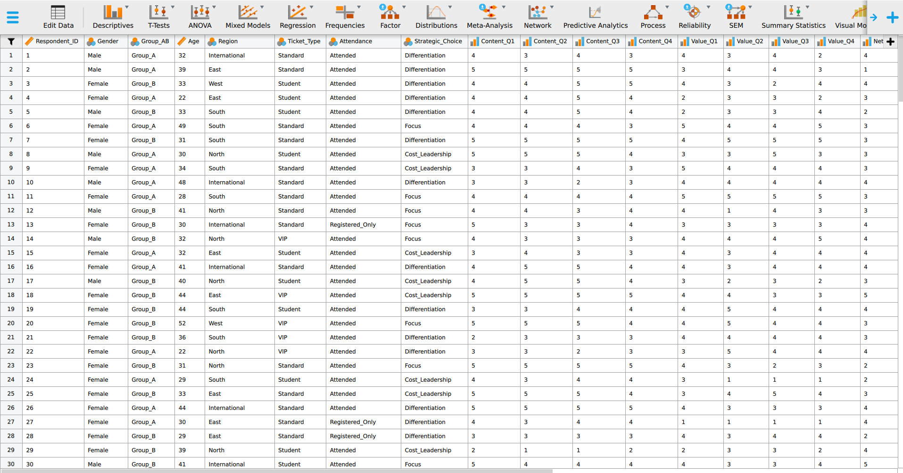
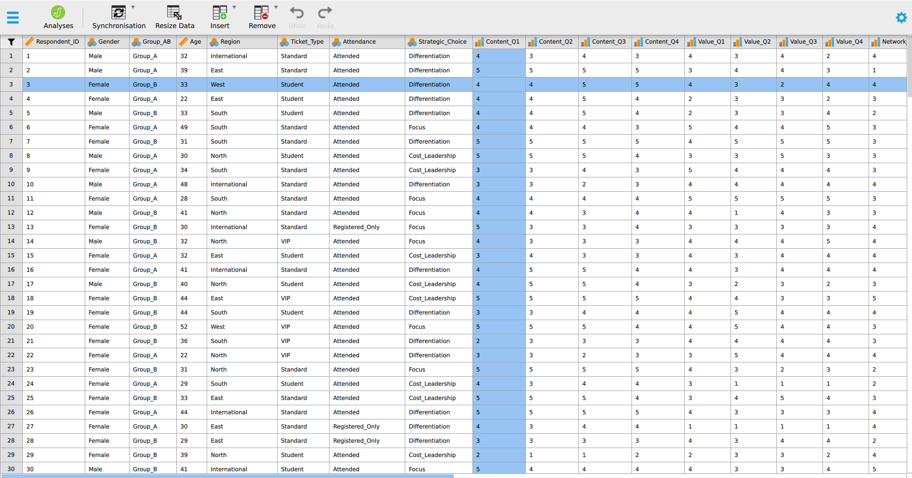
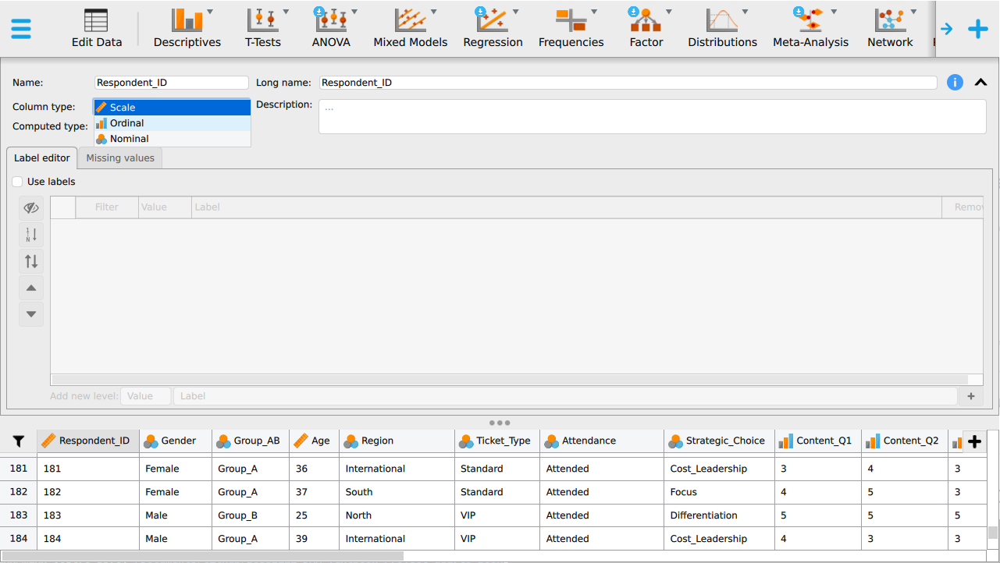
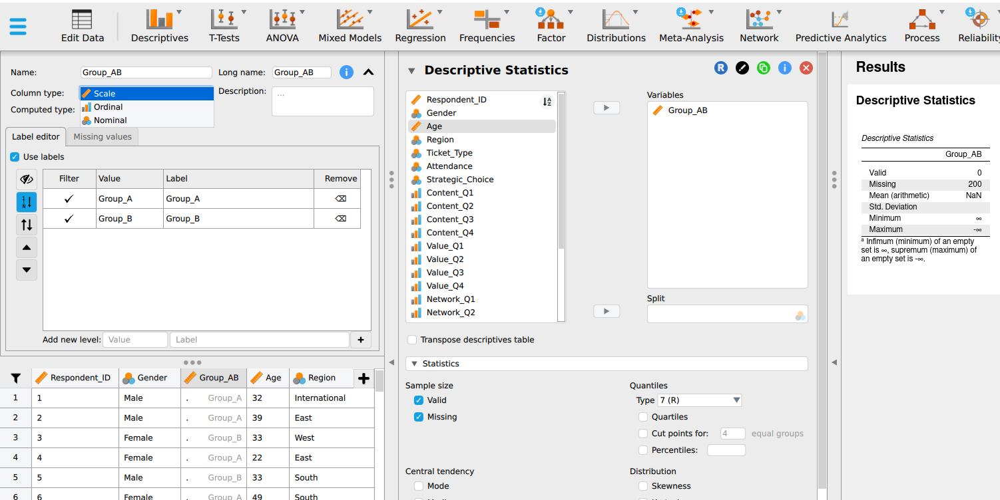
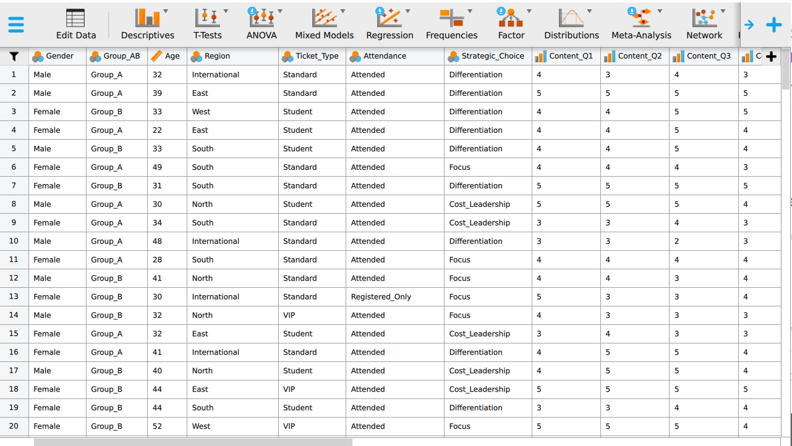

Chapter 1: Data, Measurement Scales and Descriptive Statistics
Lecture: Does the service meet expectations?
Chapters 1–2
Describing data
Chapter 3
Decision tools
Chapters 4–5
Testing differences
Chapters 6–8
Strategy and ethics
Chapters 9–11
Relationships
Chapters 12–15
Measurement models
The decision question
A service manager hands us a file of 200 customer records and asks: does the service meet expectations? To answer, we first need to understand what is in the file.
Lecture activities
Discussion
1 Welcome and weekly goals
⏱ 10 min
How the module is organised, and why data types and descriptive statistics come before any management decision
Acquisition
2 Core concepts
⏱ 30 min
How data, variables and measurement scales connect to frequency tables, measures of centre and measures of spread
Practice
3 Worked example and discussion
⏱ 15 min
Interpreting a short set of descriptive outputs, and what a manager can infer from them
Assessment
4 Exit check
⏱ 5 min
A short check on variable type and the most suitable descriptive summary
Learning objectives
After studying this chapter you should be able to:
- Distinguish a sample statistic from a population parameter. CLO 1
- Classify a variable by its measurement scale. CLO 1
- Interpret a frequency table and its cumulative column. CLO 1
- Select a graph that suits a variable’s type. CLO 1
- Calculate measures of centre and spread for a variable. CLO 1
- Interpret a descriptive summary for a manager. CLO 6
Activity 1: Welcome and weekly goals
Why we describe the data first
The manager asks: “Does the service meet expectations?”
Before we can answer, we need three things from the file:
- What each column records: a number, a category or a rating
- What a typical customer looks like
- How much customers differ from one another
Question for the room: the average wait was 45 minutes. Is that good news?
The dataset for the term
DMM_Teaching_Data_Full.csv
- 200 customers, 26 columns
- We use it today and in most chapters
- Every number in this lecture comes from it
- Download the file

Activity 2: Core concepts
Cases, variables, observations and values
- Case: one customer, one row
- Variable: something we record for every customer, one column, such as
AgeorRegion - Observation: everything recorded for one customer, a full row
- Value: one entry, one cell

The four terms in this dataset
| Term | In this dataset |
|---|---|
| Case | One respondent, one row, 200 in total |
| Variable | Age, Gender, Region, Satisfaction, Waiting_Time_Mins: 26 in total |
| Observation | All 26 values recorded for respondent 1 |
| Value | 32, or East, or 3.72 |
Practice question: cases and variables
A clinic’s records
A clinic records, for each patient seen in March: patient number, age, presenting complaint, minutes waited, and whether the patient was referred onward.
Name the case and the variables. What is the observation for patient 12? What is the value 28 in the waiting column? What is “March”?
Practice question: answer
- The case is the patient
- The variables are age, presenting complaint, minutes waited and referral
- The observation for patient 12 is that patient’s full row of five values, and
28is one value - “March” is a constant: every patient shares it, so it tells us nothing about differences between patients
Population, sample, parameter and statistic
Objective 1
Surveying every customer costs too much, so we survey some of them.
- Population: all the customers we want to know about
- Sample: the customers we surveyed
- Parameter: a number for the whole population, usually unknown
- Statistic: a number from our sample, which changes a little from sample to sample
Notation for the module
Objective 1
Greek letters are for populations. Ordinary letters are for samples.
| Quantity | Population parameter | Sample statistic |
|---|---|---|
| Mean | μ | x̄ |
| Proportion | π | p |
| Size | N | n |
Practice question: population and sample
Objective 1
Forty branches
A regional manager oversees 40 branches. She surveys customers at 6 of them and calculates a mean satisfaction of 3.8.
Name the population, the sample, the statistic and the parameter.
Practice question: answer
- Population: customers of all 40 branches
- Sample: customers of the 6 surveyed branches
- Statistic: the 3.8 she calculated (x̄)
- Parameter: the unknown mean across all 40 branches (μ)
- An accurate report names the sample: “Mean satisfaction among customers surveyed at 6 of our 40 branches was 3.8.”
The four measurement scales
Objective 2
Each scale adds one property to the scale before it.
| Scale | Order | Equal gaps | True zero | Example in this dataset |
|---|---|---|---|---|
| Nominal | No | No | No | Region, Ticket_Type |
| Ordinal | Yes | No | No | Return_Intention (1 to 5) |
| Interval | Yes | Yes | No | Temperature in Celsius |
| Ratio | Yes | Yes | Yes | Age, Spending, Waiting_Time_Mins |
Measurement levels in JASP
Objective 2
- Each column header carries an icon for its type
- Ruler: Scale
- Bars: Ordinal
- Circles: Nominal
- Click a column to open its type menu and correct the guess

Practice question: classify the scale
Objective 2
Classify each variable as nominal, ordinal, interval or ratio:
Ticket_Type(Standard, Student, VIP)Return_Intention(1 to 5, where 5 means certain to return)Waiting_Time_Mins- Temperature recorded in Celsius
Why the scale check matters
Objective 2
JASP read a column of group codes as numbers and calculated its mean.
Question: what does an average group code tell a manager?

Frequency distributions
Objective 3
How many customers bought each type of ticket? A frequency distribution counts the cases in each category.
| Ticket type | Frequency | Relative frequency | Percentage |
|---|---|---|---|
| Standard | 124 | 0.620 | 62.0% |
| Student | 46 | 0.230 | 23.0% |
| VIP | 30 | 0.150 | 15.0% |
Two checks for every frequency table
Objective 3
- The frequencies sum to n: 124 + 46 + 30 = 200
- The relative frequencies sum to 1: 0.620 + 0.230 + 0.150 = 1.000
- If a check fails, a value is missing or a sum is wrong
- The cumulative column, built in the tutorial, answers threshold questions such as “what share waited under 40 minutes?”
Mean, median and mode
Objective 5
Three test scores: 86, 75 and 92.
- Mean: add the scores and divide by 3: 253 ÷ 3 = 84.3. It uses every value
- Median: in order, 75, 86, 92, the middle score is 86
- Mode: each score appears once, so these data have no mode
Standard deviation: how much customers differ
Objective 5
Waiting time: mean 45.46 minutes, standard deviation 11.91 minutes.
- The standard deviation is the typical distance of a value from the mean
- So a typical customer waits about 12 minutes more or less than 45
- In our file, two customers in three (133 of 200) waited between 33.5 and 57.4 minutes
So what? The manager can plan for waits of about 33 to 57 minutes for most customers. A larger standard deviation would mean a less predictable service.
Coefficient of variation: comparing spread
Objective 5
The three standard deviations are in years, minutes and USD, so we divide each by its own mean.
| Variable | Mean | Standard deviation | Coefficient of variation |
|---|---|---|---|
Age |
35.35 years | 7.35 | 7.35 ÷ 35.35 = 20.8% |
Waiting_Time_Mins |
45.46 minutes | 11.91 | 11.91 ÷ 45.46 = 26.2% |
Spending |
505.65 USD | 256.84 | 256.84 ÷ 505.65 = 50.8% |
Question: which of the three is hardest to predict for next month?
Activity 3: Worked example and discussion
Worked example: a staffing decision
Objectives 5 and 6
Five shifts
Five shifts record 28, 39, 22, 51 and 34 calls.
Calculate the mean, then decide whether it is the right basis for a staffing rule.
Worked example: the calculation
Objectives 5 and 6
- Add the five counts: 28 + 39 + 22 + 51 + 34 = 174
- Divide by 5: 174 ÷ 5 = 34.8 calls
- As a description of the month, 34.8 is correct
Worked example: the interpretation
Objectives 5 and 6
- Staff for 34.8 calls, and the 51-call shift is short of people
- Staff for 51 calls, and the quieter shifts have spare staff
- The mean is the right average for the month
- Choosing the staffing level is the manager’s decision

Discussion
Objective 6
What should the manager staff to, and why?
Activity 4: Exit check
Exit check
Objectives 2 and 5
Before you leave: choose one variable from the teaching dataset and write down
- Its measurement scale
- One summary that suits it
- One summary that would be invalid for it

Back to the manager’s question
“Does the service meet expectations?”
To answer properly, we need three figures from the file:
- The average wait
- The range that the middle half of customers waited within
- How many customers waited longer than the one-hour promise
In the tutorial, you will find all three in your own output.
Recap
- A statistic is a number from our sample of customers
- Check each column’s type first
- A frequency table adds up to the number of customers
- The cumulative column answers “how many waited under 40 minutes?”
- Report the average and the spread together
- Tell the manager which customers, branch and month the figures cover
Before the tutorial
- Open
DMM_Teaching_Data_Full.csvin JASP, or in PocketStat in the browser - Bring today’s four measurement scales: the tutorial opens with an audit of six variables
- The tutorial produces four outputs and a 120-word summary for the service manager